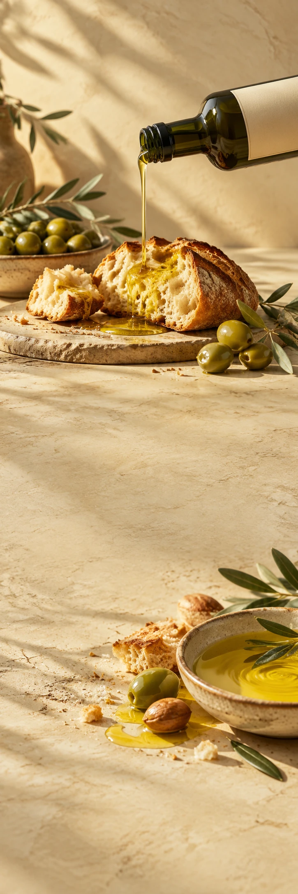

OLIVO TABLE
Olijfolie & foodMerkintroductie
OLIVO TABLE / LITTLE THINGS, LONG LUNCHES
Doe er nog
een scheutje bij.
Goed brood. Een open fles. De middag mag blijven.
Iets om te breken. Iets om te dippen. Iemand die nog even blijft zitten. Maak van de kleine dingen het begin van een lange lunch.
Ontdek OlivoSchuif
maar aan.
Goed brood. Een open fles. De middag mag blijven.
Ontdek Olivo